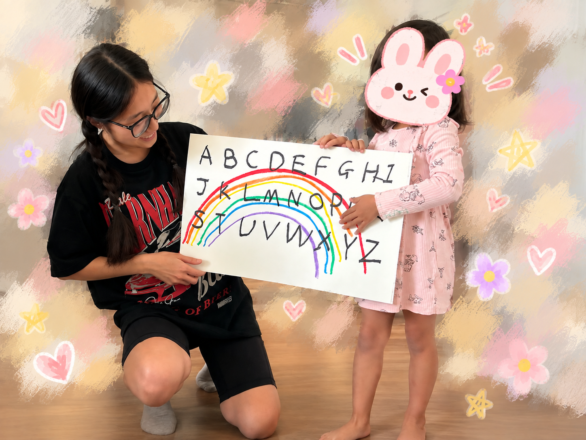
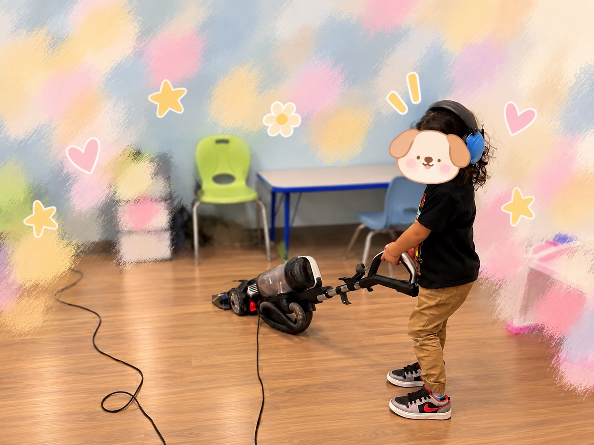
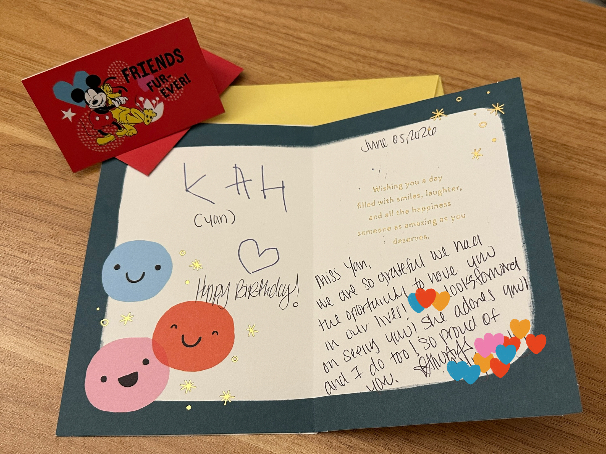

Behavioral Science · Data · Practice
Irvine, California
My path began in psychology and moved through years of studying behavior through data. Behavior, of course, does not live in a spreadsheet. Applied Behavior Analysis added another perspective: working with behavior systematically through observation, direct support, and ongoing adjustment.
Behavior is shaped by biology, personal history, psychological states, social environments, and everyday circumstances. No single factor determines what happens next. I am interested in how to support meaningful behavior as it emerge, persist, and adapt.
I am interested in the gap between capacity and action: why behavior changes across situations, what shapes those changes, and which conditions may be modifiable.
When and under what conditions does existing behavioral capacity translate into action in everyday life?
VARIATION
Behavior reflects interacting histories, environments, individual differences, and current conditions. I am especially interested in what changes within the same person across situations and over time.
IMPLEMENTATION
Having a skill, strategy, or resource does not guarantee that it will be used. I study the conditions associated with whether existing capacities are expressed when and where they matter.
MEASUREMENT
Longitudinal and real-world behavioral data make it possible to study variation that averages can hide. How behavior is measured shapes which patterns we are able to see.
INTERVENTION
Understanding behavior becomes most useful when it helps identify modifiable conditions and informs support that can respond to people and contexts as they change.
Different behaviors and settings have given me different ways to study variation, implementation, and measurement.
Independent Research · 2026–Present
I use daily behavioral data to study protective behavioral strategies during real-world drinking occasions, with particular attention to variation within the same person across occasions.
R · Longitudinal Data · Multilevel Models · Ordinal Models
Addiction Research · 2024
Working with intensive longitudinal alcohol-use data showed me how much behavior can vary within the same person across days and situations.
Ecological Momentary Assessment · Intensive Longitudinal Data
Graduate Capstone · 2023
I studied engagement with a digital mindfulness intervention using process-mining methods, examining how participants moved through and used an available behavioral resource.
Python · Process Mining · Digital Behavioral Data
PIVOT Lab · 2023–2024
Working with behavioral and survey data made measurement itself part of the research problem. Analytical choices determine which forms of variation remain visible in a model.
R · Data Cleaning · Statistical Modeling · Behavioral Measurement
I approach behavior as something that changes across people, moments, environments, and histories. That makes variation part of the signal, not simply noise.
01 · Observe
Observe behavior across people, moments, situations, and real-world conditions.
02 · Model
Model within-person variation and examine individual, contextual, and momentary factors associated with behavioral change.
03 · Test
Test which factors are meaningfully associated with action and which may be modifiable through behavioral support.
04 · Adapt
Use behavioral response as new information to refine when, where, and how support may be most useful.
Working directly with children and families taught me to notice what behavioral measures do not fully capture: effort, hesitation, trust, context, and the meaning that a small change can have in everyday life.
It keeps my research grounded in a simple principle: behavioral evidence should eventually be useful to the people and settings from which it comes.
A few artifacts from practice remind me of the everyday moments behind behavioral measurements.



I want to develop methods for identifying when existing capacities are unlikely to translate into action, which modifiable conditions contribute to those moments, and when support may be most useful.
The goal belongs to the person. The science helps make change more achievable.
I want my work to move in both directions: from real-world behavior to better scientific questions, and from evidence back to interventions, tools, and systems that people can actually use.